China Employee Termination 2026: Pulse Readiness-Signals Brief for Foreign Employers
Key takeaways
- Foreign employers can reduce China termination risk by tracking a short set of readiness signals before each action.
- The most decision-critical signals are route legality, local interpretation certainty, evidence integrity, payroll/tax closure, communication discipline, and closure readiness.
- Signal-led governance helps global teams detect risk early and pause before avoidable disputes form.
- City-level interpretation should be treated as a live readiness signal, not static background.
- This brief is impact-first; legal depth is included as a secondary appendix.
What changed and why this matters now
In fast cycles, teams often move from “mostly ready” to communication too quickly. The hidden gap is signal quality: route assumptions are not fully proven, timeline records conflict, payroll mapping is unfinished, or scripts are not fully controlled. A readiness-signals model solves this by translating legal-operational requirements into visible green/amber/red checks.
This run rotates to a readiness-signals format (distinct from priority-filters, execution-lenses, checkpoints, and rubric variants) while keeping Pulse-style concision and action focus.
Plain-language legal context first
China employer-initiated termination generally requires a lawful statutory basis with coherent factual/process execution. Public legal anchors include the PRC Labor Contract Law framework, implementing regulation references (including Decree No. 535 context), and Supreme People’s Court labor-dispute interpretation materials. Practical implication: legal entitlement and execution discipline must align.
Readiness signals operationalize this into simple decisions: proceed, remediate, or hold.
Pulse readiness signals (impact-first)
Signal 1 — Route Readiness
Question: Is route-fact fit documented with fallback strategy?
Green evidence: case-specific route memo + fallback path.
Red signal: unresolved route assumptions or generic rationale.
Signal 2 — Local Readiness
Question: Is city-level practical interpretation stable for this case?
Green evidence: current local memo + no unresolved conflicts.
Red signal: conflicting local guidance remains open.
Signal 3 — Evidence Readiness
Question: Is chronology coherent, source-owned, and contradiction-free?
Green evidence: reconciled timeline ledger + closure notes.
Red signal: material contradiction unresolved.
Signal 4 — Payroll Readiness
Question: Are pay/severance/IIT/social treatment and payment workflow finalized pre-communication?
Green evidence: approved payroll/tax packet + payment-proof plan.
Red signal: unresolved payout/tax element.
Signal 5 — Communication Readiness
Question: Is messaging aligned with validated facts and fully controlled?
Green evidence: approved script + briefed spokesperson + escalation protocol.
Red signal: unbriefed speaker or high script-drift risk.
Signal 6 — Closure Readiness
Question: Can the case be reconstructed rapidly under challenge?
Green evidence: indexed archive + retrieval test pass.
Red signal: missing links or retrieval failure.
Readiness signal board
| Signal | Owner | SLA | Block if red |
|---|---|---|---|
| Route | Legal lead | 24h | Yes |
| Local | Local counsel coordinator | 48h | Yes |
| Evidence | HR Ops + Compliance | 24-48h | Yes |
| Payroll | Payroll + Tax | Same day | Yes |
| Communication | HR lead | Same day | Yes |
| Closure | Compliance + Records | 1 business day | Case close |
Why this helps foreign employers
Signal-based reporting gives HQ and local teams one concise dashboard for decision quality. It avoids long legal memos in operational moments and helps managers understand exactly why a case is paused.
Practical scenarios
Scenario 1: Route green, payroll red
Legal route is stable, but final IIT mapping is incomplete.
Signal outcome: Signal 4 red blocks communication.
Scenario 2: Evidence flips red late
A late manager input conflicts with chronology documentation.
Signal outcome: Signal 3 reopens and pauses progression.
Scenario 3: Local uncertainty in one city
National-level guidance appears clear; city-level interpretation diverges.
Signal outcome: Signal 2 red prevents route progression.
Role-owned SOP (signal governance)
Step 1 — Assign signal owners and backups
Owners: HRBP + Legal + Payroll lead
- Define owner/backups and escalation path per signal.
Step 2 — Update signal states at transitions
Owners: signal owners
- Mark green/amber/red with linked evidence.
Step 3 — Enforce red-state blocks
Owners: cross-functional panel
- Block downstream steps on red critical signals.
Step 4 — Publish daily signal note
Owners: HR + Legal + Payroll
- Record status, blockers, and remediation owners.
Step 5 — Analyze repeated red patterns
Owners: operations governance + compliance
- Use recurrence data to improve controls.
Required document checklist
- Employee profile and contract context
- Route rationale memo + fallback route
- City-level interpretation memo
- Chronology/source ledger
- Script package and briefing records
- Payroll/severance/IIT/social worksheet
- Settlement/acknowledgment records
- Payment proof artifacts
- Signal status log
- Closure memo + archive index
Exception handling playbook
- Disagreement on signal color: evidence-based tie-break note.
- New fact invalidates green status: reopen affected signal immediately.
- Owner unavailable: activate backup owner and preserve SLA.
- Deadline override request: disclose unresolved red signals and formal risk acceptance.
- Recurring red in one signal: launch targeted process redesign.
System implementation notes
- Add signal-state fields (green/amber/red) with evidence links.
- Auto-block downstream tasks when critical signals are red.
- Track KPIs: red-signal frequency, time-to-green, dispute correlation.
- Keep complete audit trail for state changes.
- Recalibrate signal definitions monthly.
Common mistakes and prevention
- Mistake: signal review treated as optional.
Prevention: mandatory updates before major transitions.
- Mistake: local readiness underweighted.
Prevention: hard Signal 2 gate.
- Mistake: payroll readiness checked too late.
Prevention: hard Signal 4 pre-communication gate.
- Mistake: communication readiness assumed by default.
Prevention: explicit script/briefing evidence requirement.
- Mistake: closure readiness skipped.
Prevention: mandatory retrieval test.
What to do now
- Deploy six readiness signals across all active China termination cases.
- Assign owners/backups and SLAs per signal.
- Enforce red-state blocks for route/local/evidence/payroll signals.
- Run signal updates before each major transition.
- Publish daily signal notes for cross-functional visibility.
- Train managers on communication signal requirements.
- Use recurring red-signal analytics to improve controls.
What to watch next
- City-level developments may increase local-readiness volatility.
- Case surges may stress payroll-readiness performance.
- Practitioner updates may tighten evidence-readiness expectations.
FAQ
1) Why readiness signals instead of one overall score?
Signals show where risk sits and who must act next.
2) Can one red signal block progression?
Yes, especially route/local/evidence/payroll signals.
3) How often should signals be updated?
Before each major transition and after material fact changes.
4) Who approves final go/hold?
Cross-functional HR, legal, and payroll leads.
5) Is local interpretation always required?
Yes, because city-level practice can materially affect defensibility.
6) What is the top avoidable failure?
Proceeding while payroll or evidence signals remain red.
7) How does this improve over time?
By tracking recurring red patterns and fixing root causes.
Legal depth appendix (secondary)
This brief is grounded in official/legal and practitioner materials relevant to employer-side termination operations in China. Core anchors include the PRC Labor Contract Law framework, implementing regulation references associated with Decree No. 535 context, and Supreme People’s Court labor-dispute interpretation materials. Practitioner and payroll-context sources provide practical interpretation for foreign employers. Residual uncertainty remains city- and fact-specific and should be validated with localized professional review for live matters.
Disclaimer
This content is informational only and does not constitute legal, tax, or employment advice.
Sources
- National People’s Congress (Labor Contract Law, English text), accessed 2026-03-06: http://www.npc.gov.cn/zgrdw/englishnpc/Law/2007-12/13/content_1384064.htm
- State Council Gazette reference (implementing regulation / Decree No. 535 context), accessed 2026-03-06: https://www.gov.cn/gongbao/content/2008/content_1124615.htm
- Supreme People’s Court labor dispute interpretation update page, accessed 2026-03-06: https://www.court.gov.cn/fabu/xiangqing/243981.html
- China Briefing, Employee Termination in China, accessed 2026-03-06: https://www.china-briefing.com/news/employee-termination-in-china/
- ICLG Employment & Labour Laws and Regulations: China, accessed 2026-03-06: https://iclg.com/practice-areas/employment-and-labour-laws-and-regulations/china
- Littler ASAP analysis on China employment law developments, accessed 2026-03-06: https://www.littler.com/news-analysis/asap/key-recent-developments-chinas-employment-law-china-us-comparative-perspective
- PwC PRC Individual Income Tax summary, accessed 2026-03-06: https://taxsummaries.pwc.com/peoples-republic-of-china/individual/taxes-on-personal-income
Need local employment support in China?
If you need a compliance-first partner for hiring, payroll, and risk controls in China, China-Payroll.com can help evaluate the right setup.
Image Prompt Pack
Create a 16:9 hero image for article title: 'China Employee Termination 2026: Pulse Readiness-Signals Brief for Foreign Employers'. Scene: global operations team evaluating workforce model options for China market entry. Include motifs: decision matrix, org ch…